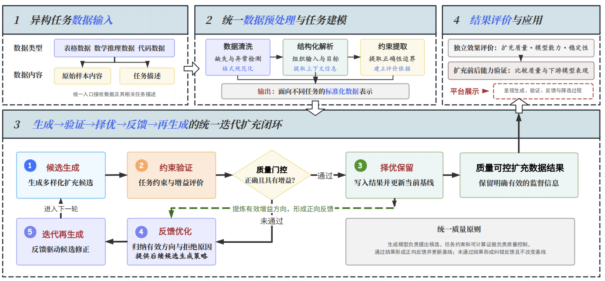

面向生成式模型的高质量数据扩充技术
本项目面向高质量监督数据不足、人工扩充成本高与生成结果缺乏可靠验证等问题，构建“候选生成 → 约束验证 → 择优保留 → 反馈优化 → 迭代再生成”统一闭环，实现表格特征、数学推理链与程序代码三类数据的高质量自动扩充，为生成式模型提供结构更丰富、质量可验证的监督数据。
核心特色与创新
统一"生成-验证-反馈"闭环，覆盖表格特征、数学推理链与程序代码三类数据
三类数据统一扩充闭环 核心架构
本项目以“候选生成 → 约束验证 → 择优保留 → 反馈优化 → 迭代再生成”为统一闭环，将LLM的生成能力与可计算的验证机制深度融合：表格方向以决策树反馈引导可解释特征生成，数学方向以节点遮盖与恢复扩充推理链，代码方向以多策略改写与执行验证扩充程序数据；三类任务均以质量门控择优保留、以反馈驱动迭代，形成面向异构任务数据的质量可控扩充系统。
自然语言驱动的特征生成与优化 表格数据扩充
将LLM作为表格特征工程的"优化器"：以自然语言为核心驱动，结合数据画像、CART分裂路径与XGBoost残差分析生成候选特征公式，经语法解析、数值稳定性和目标泄漏检查后，由验证集Macro F1择优保留，未通过原因反馈至下一轮生成。通过自然语言反馈机制，LLM可持续"反思"并修正特征生成策略，在Jungle Chess、Balance Scale与Chess KRK三个公开数据集上验证了质量可控的自动特征扩充能力。
表格数据扩充 表格方向
以可执行公式为扩充对象：LLM 结合数据画像、CART 分裂路径与 XGBoost 残差生成候选特征，经语法解析、数值稳定性与目标泄漏检查后由验证集 Macro F1 择优保留。在 Jungle Chess、Balance Scale 与 Chess KRK 三个公开数据集上共评价 75 个候选、保留 8 个有效特征，测试集 Macro F1 分别提升 14.18、22.76 与 3.41 个百分点（平均 13.45 个百分点），验证了质量可控的表格特征自动扩充能力。
数学推理链节点扩充 五维质量门控
将思维链拆解为带前后依赖的轻量推理图，通过遮盖与恢复中间节点补充推理步骤；从去重复性、逻辑一致性、公式正确性、步骤完整性与推理增量五个维度加权评分，结合答案一致性验证与新增节点约束进行门控，未通过者回退至原始步骤，保证扩充只保留有效推理增益。
代码数据扩充与在线策略蒸馏 OPD 训练
从推理说明、代码风格、语法结构、变量命名与控制流五个方向生成代码改写候选，经语法解析、接口校验、安全检查和单元测试验证功能一致性，并按质量门控择优保留；在学生自身生成轨迹上引入教师模型词元分布监督开展在线策略蒸馏（OPD）训练，MBPP 上 pass@1 由 34.4% 提升至 42.8%。
自动化特征生成平台
支持 CSV、Excel 格式（.csv / .xlsx / .xls），文件大小不超过 50MB
核心模拟与数据集演示
查看项目总技术研究框架，选择表格数据集，运行完整模拟并查看分析报告

数据集选择（表格数据特征扩充）
真实数据集性能提升对比
基于Robust-OCTree v2.0算法在多个公开数据集上的测试结果
各数据集 F1-Score 提升对比
迭代优化过程（Jungle Chess）
扩充数据能够提升模型训练效果
在 3 个公开表格数据集上，经 LLM 生成、约束验证与验证集择优的扩充特征使下游模型 Macro F1 平均提升 +15.65 个百分点、Log Loss 平均降低约 17.4%，验证了高质量扩充数据对模型训练效果的正向促进作用；数学推理（80.0% → 92.5%）与代码（pass@1 34.4% → 42.8%）方向同样在在线策略蒸馏（OPD）训练中观察到模型能力提升。
表格特征扩充与模型性能验证成果
基于“候选生成 → 约束验证 → 择优保留 → 反馈优化 → 迭代再生成”闭环，以可执行公式为扩充对象：LLM 结合数据画像、CART 分裂路径与 XGBoost 残差生成候选特征，经语法解析、数值稳定性与目标泄漏检查后由验证集 Macro F1 择优，最后在独立测试集上评价扩充效果。
表1 表格特征扩充总体结果
| 数据集 | 样本数 | 保留特征 | 扩充前 Macro F1 | 扩充后 Macro F1 | 提升 |
|---|---|---|---|---|---|
| Jungle Chess | 44,819 | 3 | 0.5603 | 0.7022 | +14.18 个百分点 |
| Balance Scale | 625 | 2 | 0.5824 | 0.8099 | +22.76 个百分点 |
| Chess KRK | 28,056 | 3 | 0.3705 | 0.4046 | +3.41 个百分点 |
图1 特征扩充前后的独立测试 Macro F1
表2 典型表格特征扩充案例（Balance Scale 样本）
数学推理链扩充与模型能力验证成果
基于“推理解析 → 节点遮盖 → 候选恢复 → 约束验证 → 择优保留 → 反馈优化 → 迭代再生成”闭环，从 GSM8K、MATH-500 与 NuminaMath-CoT 三个公开数据集各选取 30 道题（共 90 题）完成真实 API 实验；并接入在线策略蒸馏（OPD）模型，比较训练前后的数学解题能力。
表1 数学推理链扩充总体结果
| 方法 | 有效扩充解答 | 严格接收率 | 实际新增节点 | 最终保留平均分 |
|---|---|---|---|---|
| 原始思维链 | 不适用 | 不适用 | 0 | 0.794 |
| 单次恢复 | 6 / 90 | 6.7% | 6 | 0.798 |
| 反馈优化 | 19 / 90 | 21.1% | 19 | 0.810 |
图1 不同方法实际保留的扩充数量
表2 典型数学推理节点扩充案例（GSM8K 样本 gsm8k_test_59）
表3 统一 MATH 测试集上的模型能力对照
| 模型 | 正确数 | 单次解题正确率 | 相对基础模型 |
|---|---|---|---|
| Base Qwen3-1.7B | 32 / 40 | 80.0% | 基线 |
| Original OPD | 35 / 40 | 87.5% | +7.5 个百分点 |
| History OPD | 37 / 40 | 92.5% | +12.5 个百分点 |
图2 数学模型训练前后的解题正确率对比
代码数据扩充与模型训练成果
基于“候选改写 → 语义验证 → 质量评估 → 择优保留 → 反馈优化 → 迭代再生成”闭环，从推理说明、代码风格、语法结构、变量命名与控制流五个方向改写 MBPP 程序；并在学生模型自身生成轨迹上引入教师模型词元分布监督，开展在线策略蒸馏（OPD）训练与基准评测。
表1 代码改写扩充结果
表2 典型代码扩充案例
| 任务 | 改写方向 | 主要变化 | 单元测试 | 质量变化 | 结果 |
|---|---|---|---|---|---|
| MBPP Task 601 | 语法结构与变量命名 | 统一缩进，将 mcl、max 等含义不明确的变量改为 chain_lengths、max_length | 3/3 通过 | 可读性与可维护性提高 | 保留 |
| MBPP Task 603 | 语法结构与变量命名 | 将列表线性删除改为按索引执行 pop，并优化变量命名 | 全部通过 | 实现更简洁，复杂度降低 | 保留 |
| MBPP Task 609 | 变量命名与代码风格 | 将 x 改为 max_value，统一运算符间距和代码格式 | 全部通过 | 命名规范性提高 | 保留 |
| MBPP Task 602 | 对照样本 | 候选代码与原程序基本相同，未产生有效质量增益 | 通过 | 指标无改善 | 不保留 |
表3 Task 601 扩充前后质量对比
| 指标 | 扩充前 | 扩充后 |
|---|---|---|
| 代码风格违规数 | 26 | 0（↓26） |
| 可维护性指数 | 55.5 | 58.2（↑2.7） |
| 圈复杂度 | 7 | 5（↓2） |
| 单元测试通过率 | 100% | 100% |
图1 HumanEval 代码生成结果构成（164 题）
表4 OPD 训练前后代码生成能力（pass@1）
| 模型 | MBPP-full（500 题） | MBPP-sanitized（257 题） | HumanEval（164 题） |
|---|---|---|---|
| 原始学生模型 | 34.4% | — | 68.3% |
| OPD 学生模型（step 200） | 42.8%（↑8.4%） | 50.2%（↑15.8%） | 65.2%（↓3.1%） |
| 教师模型 | 50.8% | — | 77.4% |